13 Jul 2022 • posted by Dina
The jump of the turtles:
from Peru to Brazil by boat
If the plans are burning, you better turn your head to the fire and get its energy. Then go to the ocean, let the waves clean your mind and the wind make the inner strings tense again. That‚Äôs how one morning we decided to go on the journey to the Amazon‚Äôs heart. Our idea was to get a pretty cheap flight to Iquitos, and from there take a boat to the Peruvian-Brazilian border (Santa Rosa in Peru and Tabatinga in Brazil) and then — to Manaus.
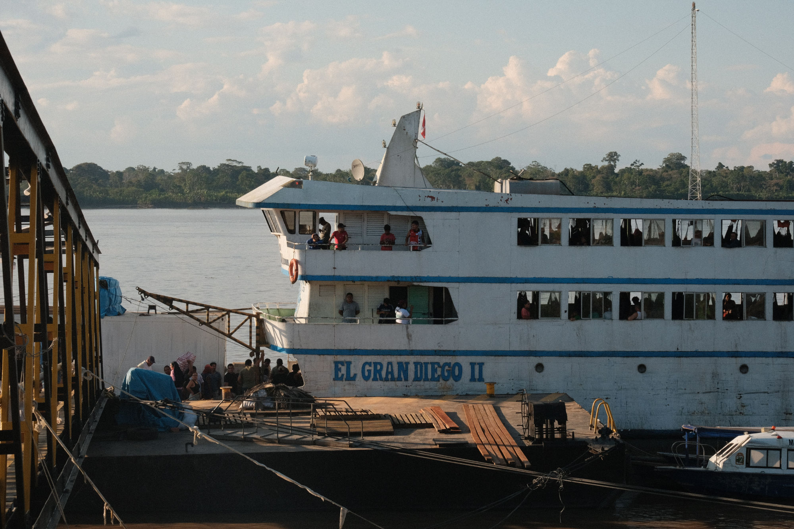
So, after one farewell week in Mancora, we faced long-running desert roads with soundtrack of our ringing camping cups. Firstly, we took the night bus to the city called Piura. It appeared to be a huge island of fast life surrounded by the hot dunes and dry hills. Only market, where we went to find some food, made impression that it can suit the half of Mancora inside of it. We easily found the airport and took our first flight to Lima. Lima’s airport is a tense knot. Caravan of signs, announcements and crowds there made us run and nervously jump, as we had only 50 minutes between flights. But everything went fine, mostly because of how late and easy-going everything in Peru is.
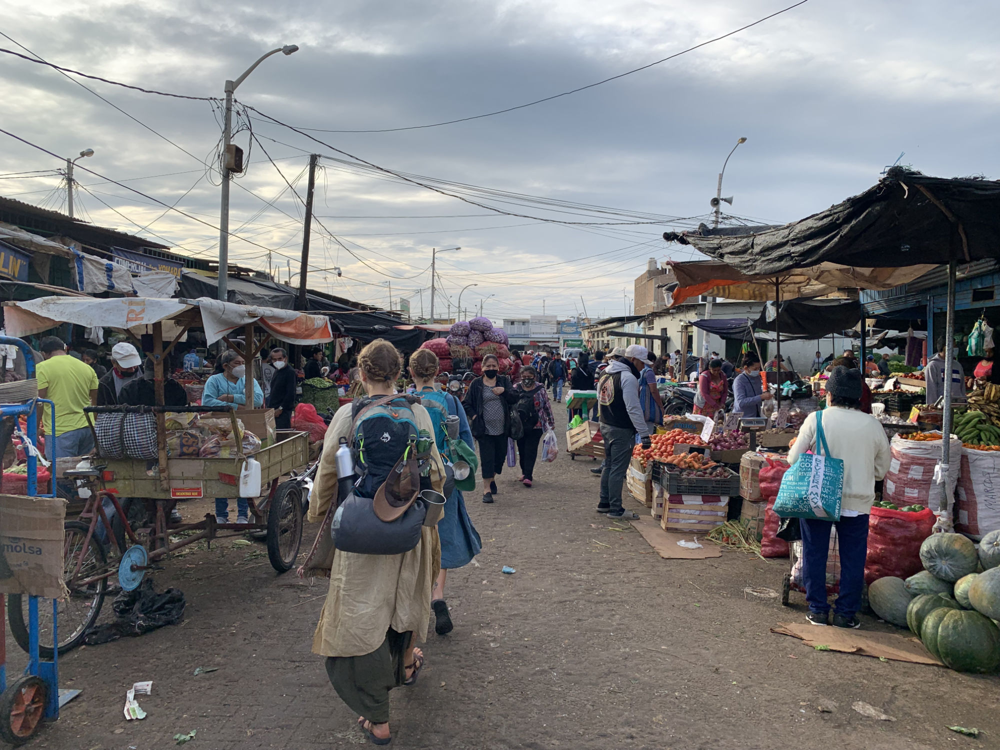
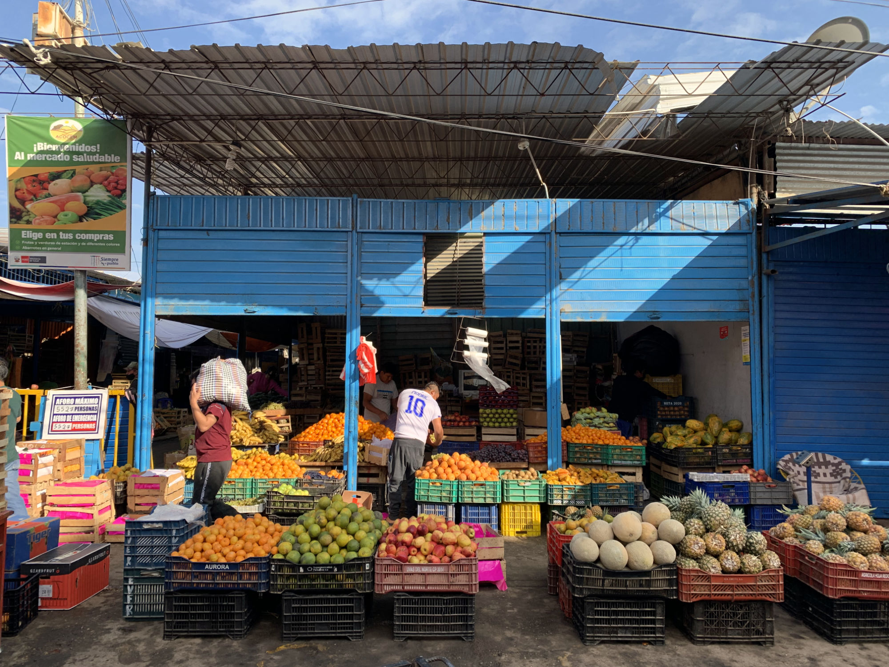
Iquitos literally ate us — put us in its mouth like three small berries. And it‚Äôs not a figure of speech but a literal feeling! The wet tongue of the Amazon rainforest is sneaky and goes under any of your clothes every second of the day. Besides that, we were very happy to finally dive in the diversity of blooming life.
After arriving we had some problems with our Airbnb booking. So, we advise you to firstly contact your host and make sure that the room is available. We found out that because of the pandemic a lot of accounts were frozen.
We spend two nights and two days in Iquitos. The first day we went around to find the boat tickets, planing to leave the city in the evening but result of our walk showed us the closed doors of the port, and lack of the information from the locals. So, we needed to wait until Monday (one more day), enjoying our gifted weekend. Iquitos is a bright city, with its own contrasts. Colonial buildings, blooming nature, beautiful promenade, modern cafes and a huge amount of tour agencies — that‚Äôs the one eye of Iquitos. Dirt, drugs and visible bones of the permanently hungry bodies — that‚Äôs the other eye. To see the whole face of the city, you need to stand look of both of them. Still, we really enjoyed the city, getting use to the heat of the sun and meeting with the child happiness unexpected rains. Iquitos gathers a lot of tourists and spiritual communities in the deep rain forest. So, coming there, you will for sure hear the call of the local kind spirits.
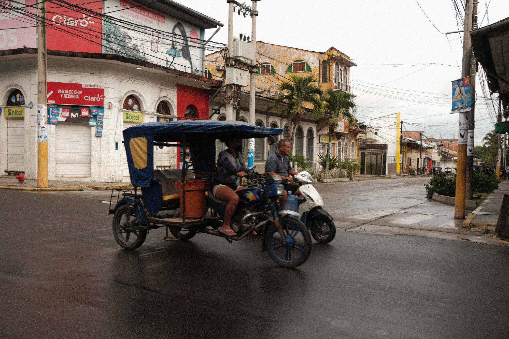
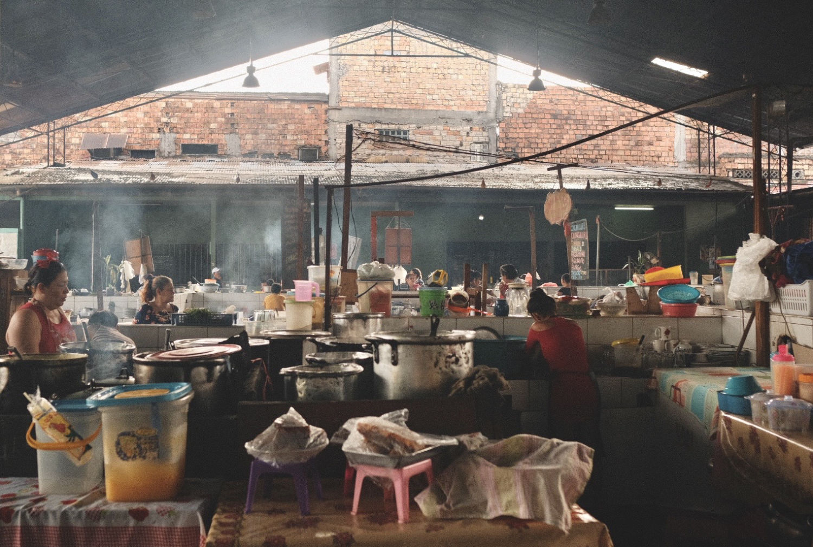
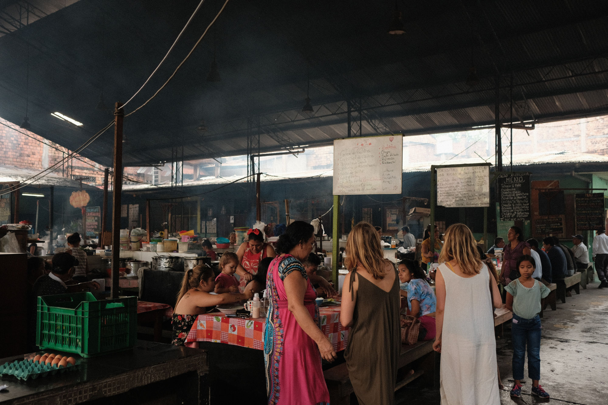
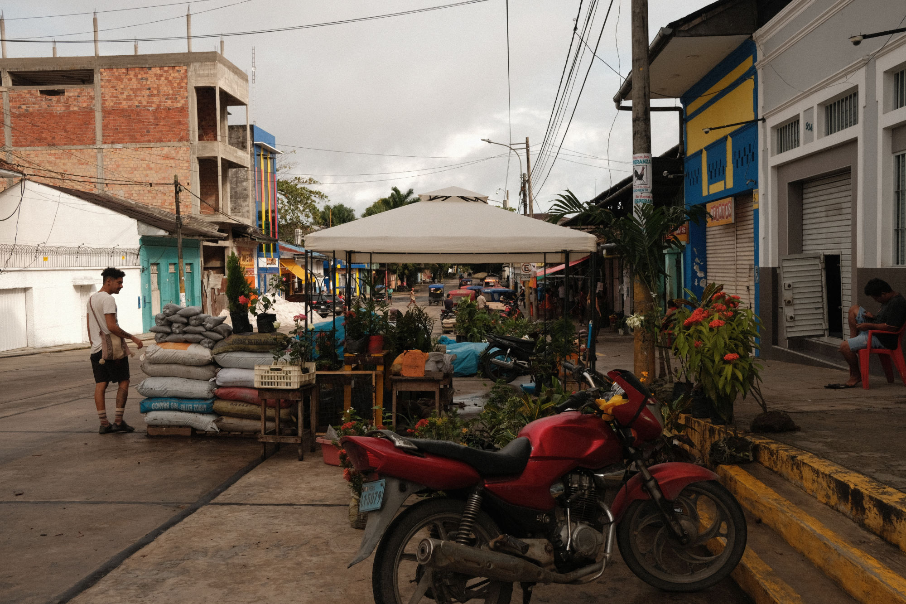
On the next day early in the morning we started to hunt the tickets. Our plan was to find the big, cheap boat that travels for three days. It sounded like an interesting journey with opportunity to see the jungles from the inside, move forward and save a good amount of money. From here more details about Iquitos — Santa Rosa boat:
— First of all, don‚Äôt try to find tickets for such boats in the city. Travel agencies offer only small fast boats (more expensive, that look like a jet, with flexible ‚Äúlaying down‚Äù seats, and less expensive with straight seats, more like a water-bus).
— To get tickets you should go to the Masusa port or Ranza port. They both have those kinds of boats, but different schedules. You can get information about departures and buy tickets only on the boat itself. So, just go to those ports any day except Sunday and ask locals about Santa Rosa direction, they will guide you to the boats where you can talk with the captain.
— The price of the Iquitos-Santa Rosa way is 80 Soles. Keep your ground in getting exactly that price.
— The boats usually depart in the evening, around 7 pm, but you can get on the board much earlier. Ask the captain when the ‚Äúgates‚Äù are open, so you will have opportunity to choose better place for your hammock.
— The whole length of trip: evening — night — the whole day — night — arriving in the morning.
— Meals are included in the ticket price. But keep in mind, that serving of food starts only on the first morning, and menu includes typical Peruvian food: oat and bread for the breakfast, rice, beans and meat for the lunch and dinner. So, we advice you to bring dinner for the first evening of departure, fruits, vegetables and snacks for the other days, if you are vegetarian.
— There is no drinkable water on board, so remember to bring enough water for the trip! Otherwise you gonna pay crazy money for 300 ml bottle, like in well-known European airports.
— Boats have bathrooms (toilet and shower together), but don‚Äôt provide any paper. So, bring your toilet paper and wet wipes.
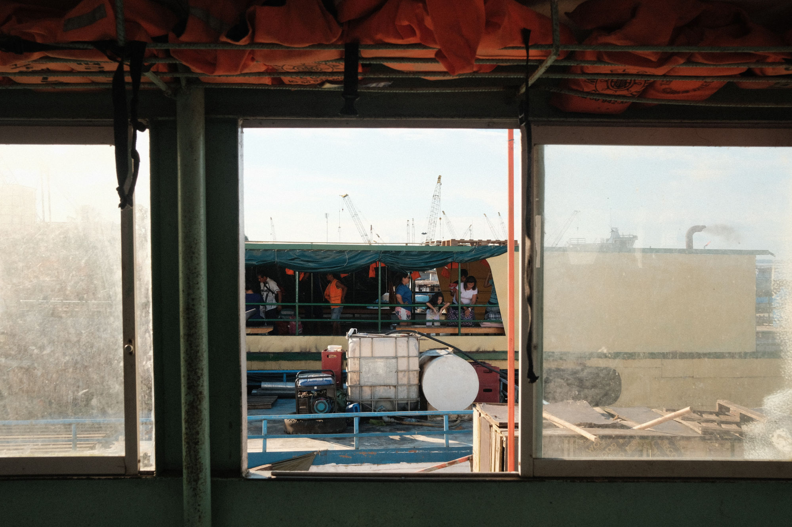
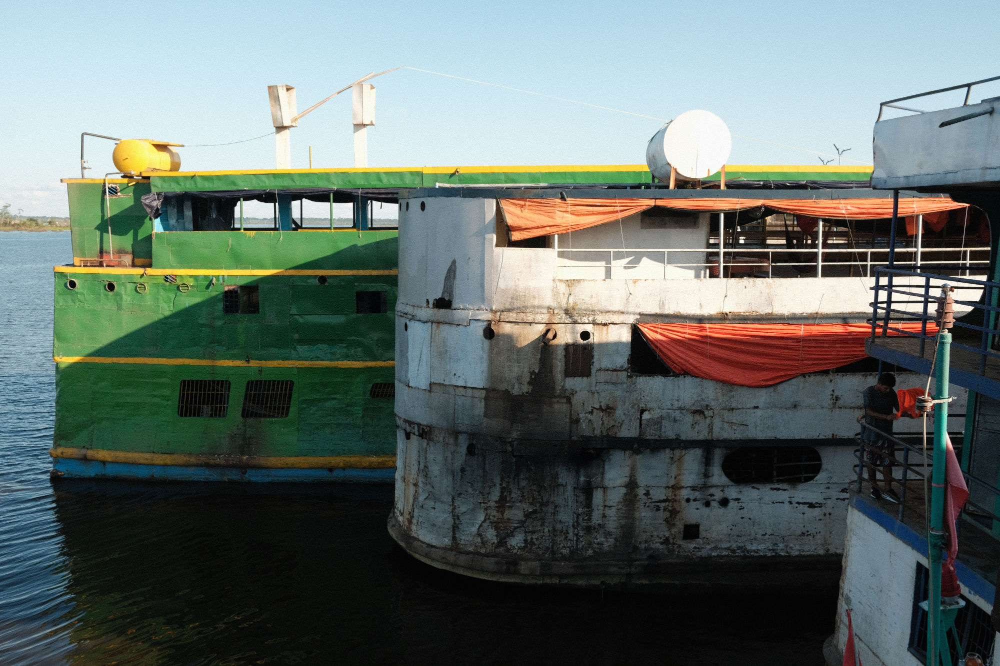
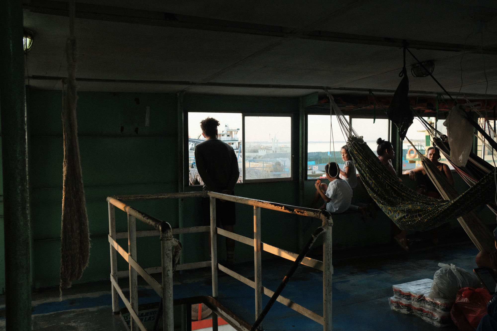
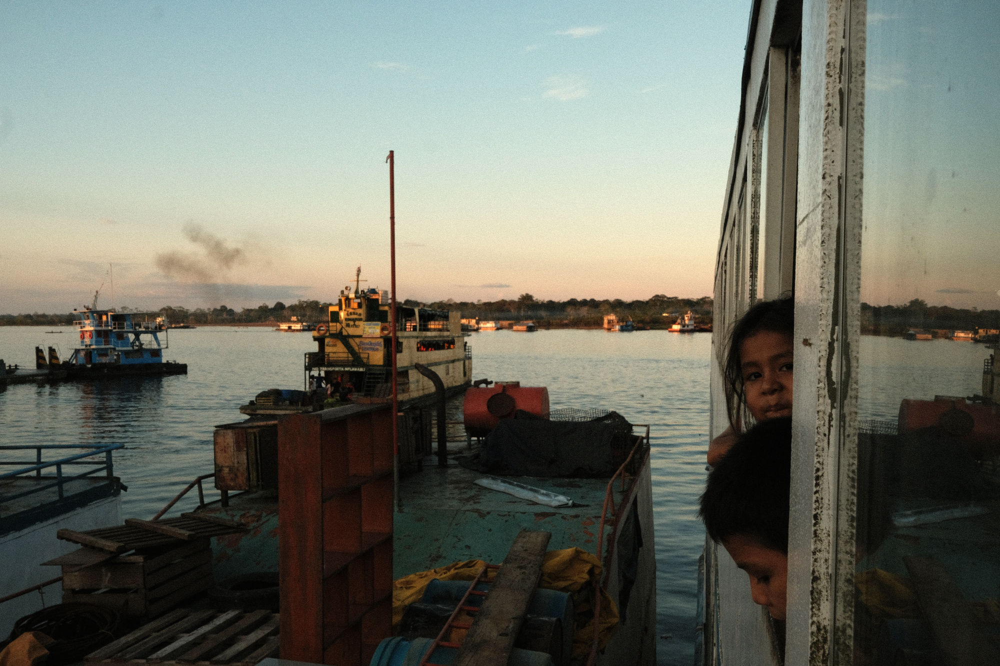
And now our experience from the inside. We arrived on our boat 3 hours before the departure, hoping to have a calm embark and to choose nice places for our hammocks. After diving inside of the heat that flood everything inside of the metal walls our first thought was “Oh...” It was a literal Noah’s ark: huge amount of people and crazy network of hammocks. With starting panic inside we went to the second floor, where more than a half of the space was still free. The floor had two rows for hammocks, two open spaces from the sides of the crew rooms, and two open spaces from the sides of the small bar and bathrooms. We chose the west side, closer to the open space near the small bar, and later that position gave us more fresh air and really nice breeze.
Three hours of waiting for the departure were fulfilled by the noise of the port, food sellers, crying kids and screaming chickens from the roof of the neighbour ship. The hot, wet air was bringing more and more people inside, so in the end the whole of our floor became very crowded. Finally, we departed after the sunset. Shower, night breeze and the brightest Milky Way cleaned our thoughts, surrounding our three hammocks with the bubble of calmness and running forward dreams. We fell asleep pretty fast, as the day was bright and long.
Morning on the ship starts early, the breakfast is served between 5 - 5:20. So, take your cup of the oats and go to the open balcony to meet the rising sun and mysterious fog on the banks. Our boat was making a lot of stops in the small wild villages, opening our eyes wider and wider. It was that kind of journey that opens for you something dramatically new, something that you've never been touched by. It was our own discovery that we made in the most precious way.
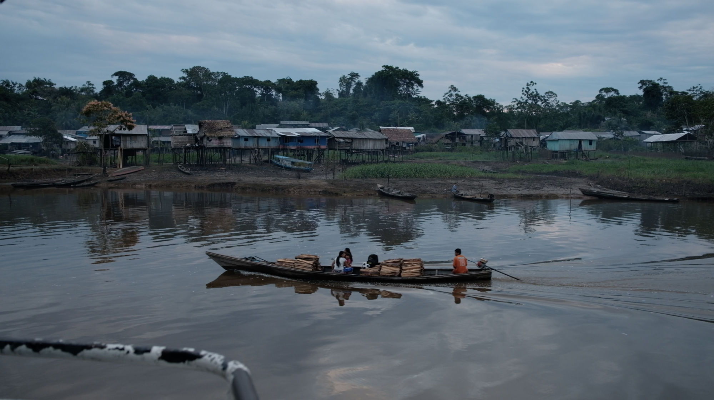
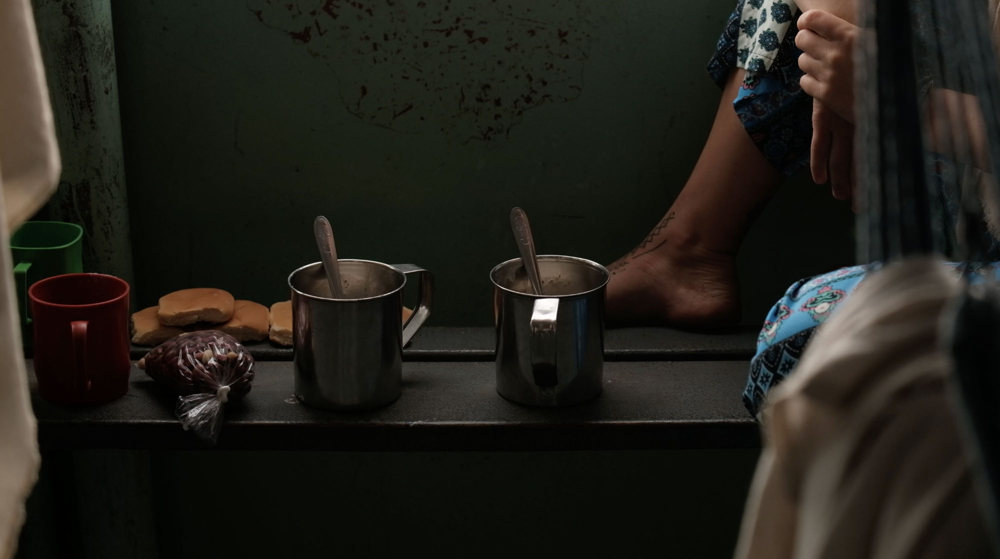
Latin America like always was teaching us how not to judge and take a side. How to observe with inner silence and just see clearly. We saw how the group of men was fighting with the huge bulls, trying to put them on the ship. They were hitting them with the sticks and pulling by the rings in their noses. We saw how the group of men was fighting with the wild jungles around, that doesn’t know mercy and just spin in their fast cycles of life. They were building houses, knowing that one day river or forest will take them.
Peruvian villages mostly are very pure and badly maintained. The light in the eyes of the locals is dim, almost invisible. Plastic chairs support primal desires of the soft bodies, and the smell of trash around stays unnoticed. Kids there are burn together with the hunger, but small local ports keep receiving boxes of coca-cola.
But the greatest river doesn’t care. The greatest river keeps going and welcome the whole of your being to join its depth. Its waters call the winds from all sides of the world, its breath makes roots to grow and leaves to blossom, and its fog wash the feathers of all the birds around. To appear inside of that huge vein on life is a great gift. It’s a strong but gentle push straight from the heart of our Mother Earth to something bigger deep inside of us.
We spend a beautiful day on the boat, observing the landscapes, greeting the dolphins, reading, playing cards and taking showers every two hours. The evening met us with the round dance of bright constellations in the sky and we spend a lot of time touching the soft darkness with our fingers. If you want to learn more about local fauna, just stay in the late evening on the open balcony and wait for the stop in one of many villages. The light will attract crazy amount of flying beings and a whole new world will appear on the 2-meters white wall. Will be good to mention that unexpectedly we didn’t have any attacks of mosquitos during the whole way.
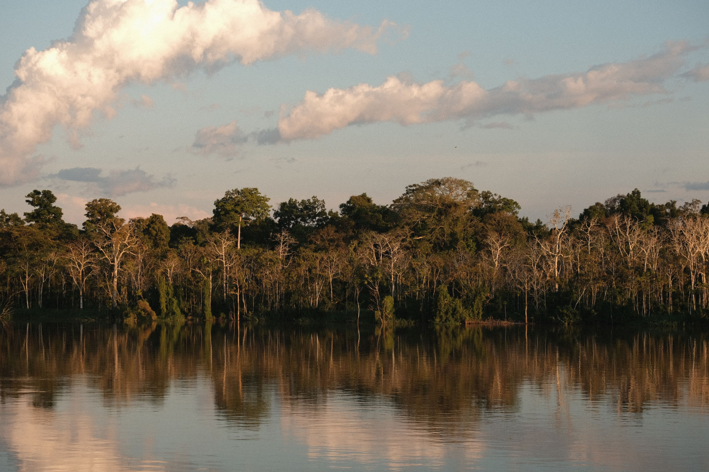
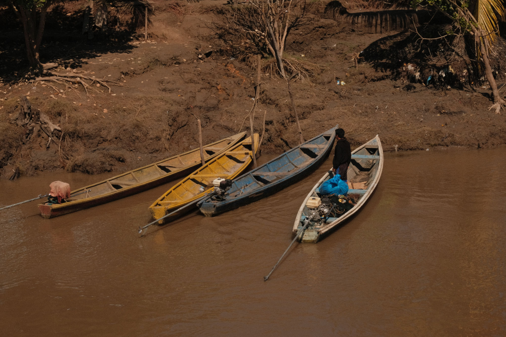
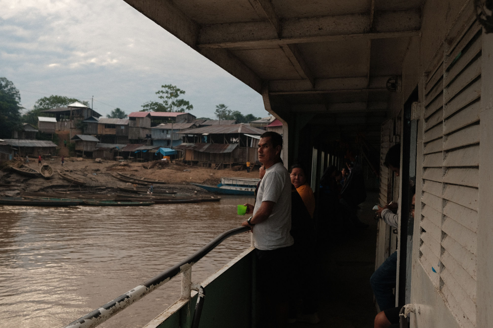
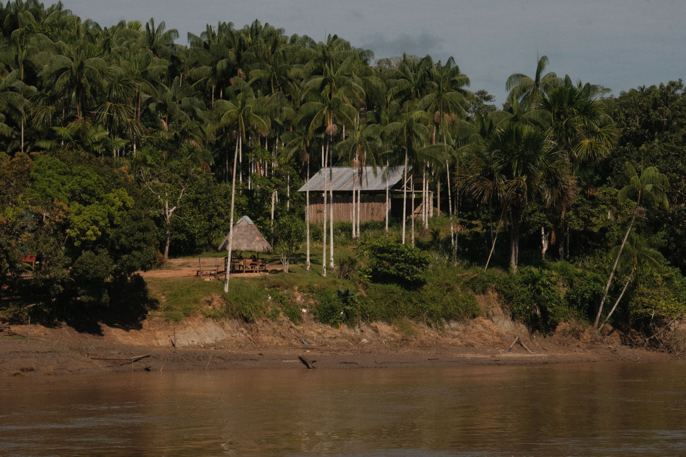
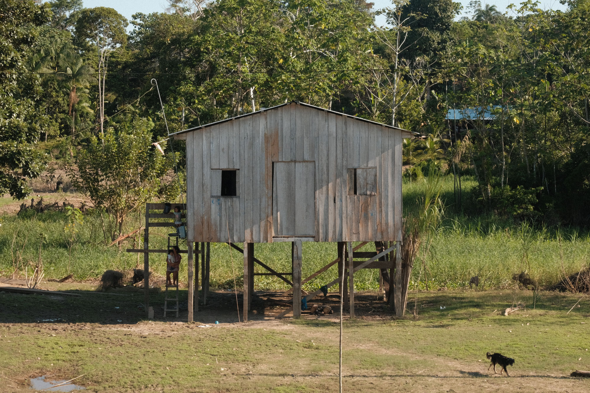
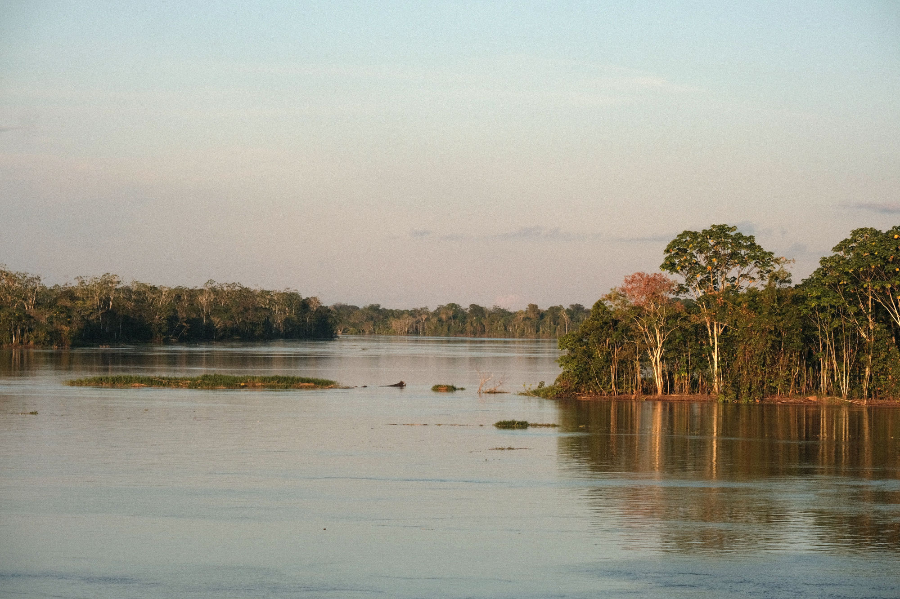
Our boat arrived to Santa Rosa on the next morning, at 5:00. There in the small wooden port we waited two hours for the opening of the immigration. We went around the town and waited another hour under the doors of the department (it opens only at 8:30 or at 9 if the only one worker was waiting for his breakfast too long) and finally got our stamps of leaving Peru. Small boat that reminds us of the local Tuk-Tuks but for the water took us to the Brazilian town, Tabatinga.
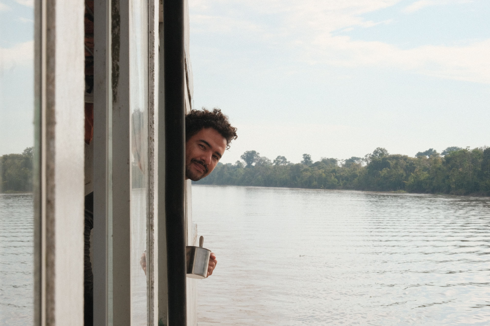
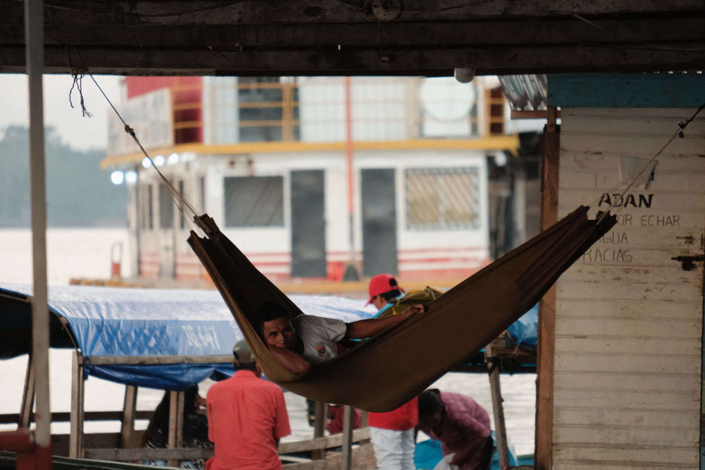
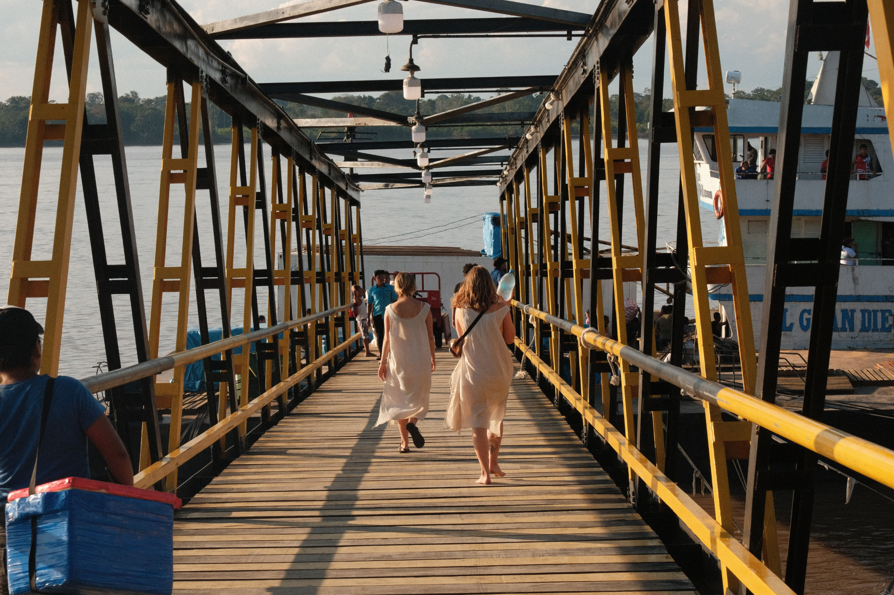